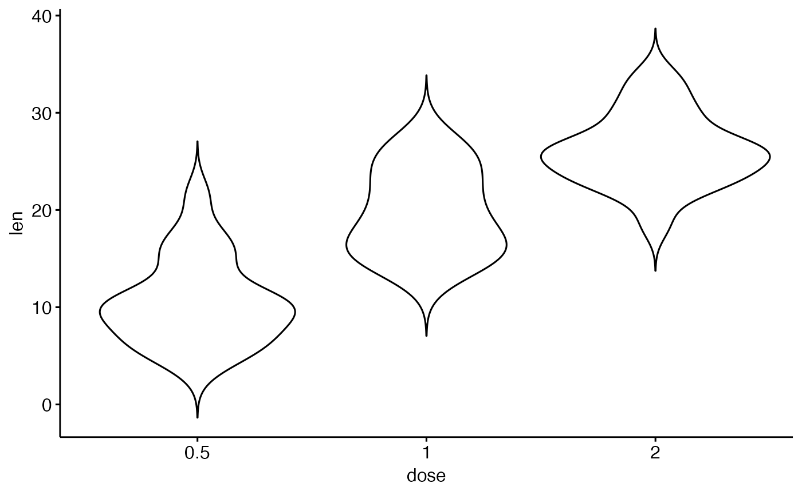
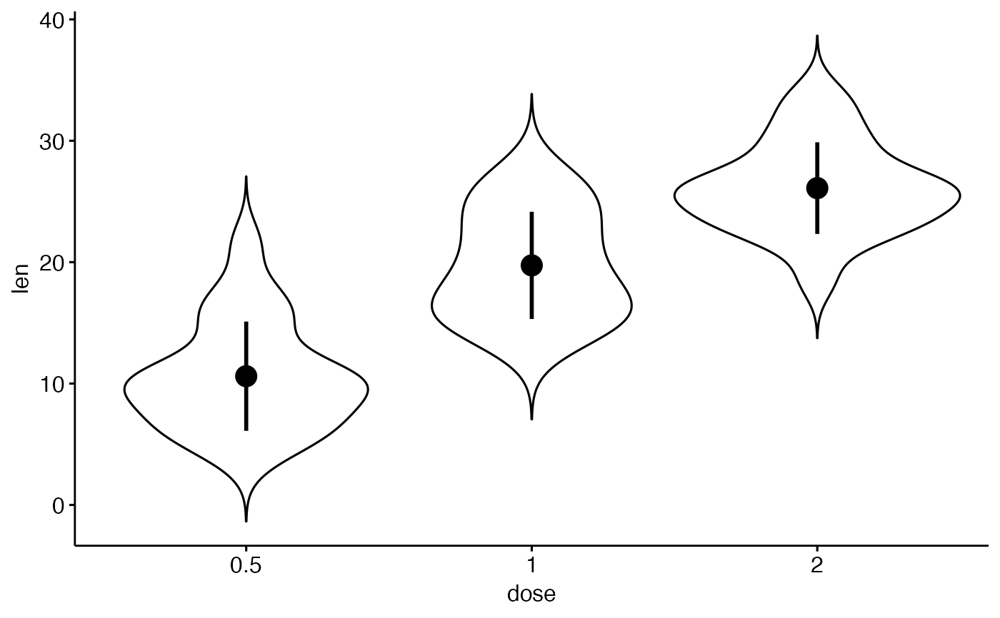

add summary statistics onto a ggplot.
Usage
add_summary(
p,
fun = "mean_se",
error.plot = "pointrange",
color = "black",
fill = "white",
group = 1,
width = NULL,
shape = 19,
size = 1,
linewidth = size,
linetype = 1,
show.legend = NA,
ci = 0.95,
data = NULL,
position = position_dodge(0.8)
)
mean_se_(x, error.limit = "both")
mean_sd(x, error.limit = "both")
mean_ci(x, ci = 0.95, error.limit = "both")
mean_range(x, error.limit = "both")
median_iqr(x, error.limit = "both")
median_hilow_(x, ci = 0.95, error.limit = "both")
median_q1q3(x, error.limit = "both")
median_mad(x, error.limit = "both")
median_range(x, error.limit = "both")Arguments
- p
a ggplot on which you want to add summary statistics.
- fun
a function that is given the complete data and should return a data frame with variables ymin, y, and ymax. Allowed values are one of: "mean", "mean_se", "mean_sd", "mean_ci", "mean_range", "median", "median_iqr", "median_hilow", "median_q1q3", "median_mad", "median_range".
- error.plot
plot type used to visualize error. Allowed values are one of
c("pointrange", "linerange", "crossbar", "errorbar", "upper_errorbar", "lower_errorbar", "upper_pointrange", "lower_pointrange", "upper_linerange", "lower_linerange"). Default value is "pointrange".- color
point or outline color.
- fill
fill color. Used only whne
error.plot = "crossbar".- group
grouping variable. Allowed values are 1 (for one group) or a character vector specifying the name of the grouping variable. Used only for adding statistical summary per group.
- width
numeric value between 0 and 1 specifying bar or box width. Example width = 0.8. Used only when
error.plotis one of c("crossbar", "errorbar").- shape
point shape. Allowed values can be displayed using the function
show_point_shapes().- size
numeric value in [0-1] specifying point and line size.
- linewidth
numeric value in [0-1] specifying line width.
- linetype
line type.
- show.legend
logical. Should this layer be included in the legends? NA, the default, includes if any aesthetics are mapped.
FALSEnever includes, and TRUE always includes. It can also be a named logical vector to finely select the aesthetics to display.- ci
the percent range of the confidence interval (default is 0.95).
- data
a
data.frameto be displayed. IfNULL, the default, the data is inherited from the plot data as specified in the call to ggplot.- position
position adjustment, either as a string, or the result of a call to a position adjustment function. Used to adjust position for multiple groups.
- x
a numeric vector.
- error.limit
allowed values are one of ("both", "lower", "upper", "none") specifying whether to plot the lower and/or the upper limits of error interval.
Functions
add_summary(): add summary statistics onto a ggplot.mean_se_(): returns themeanand the error limits defined by thestandard error. We used the namemean_se_() to avoid maskingmean_se().mean_sd(): returns themeanand the error limits defined by thestandard deviation.mean_ci(): returns themeanand the error limits defined by theconfidence interval.mean_range(): returns themeanand the error limits defined by therange = max - min.median_iqr(): returns themedianand the error limits defined by theinterquartile range.median_hilow_(): computes the sample median and a selected pair of outer quantiles having equal tail areas. This function is a reformatted version ofHmisc::smedian.hilow(). The confidence limits are computed as follow:lower.limits = (1-ci)/2percentiles;upper.limits = (1+ci)/2percentiles. By default (ci = 0.95), the 2.5th and the 97.5th percentiles are used as the lower and the upper confidence limits, respectively. If you want to use the 25th and the 75th percentiles as the confidence limits, then specifyci = 0.5or use the functionmedian_q1q3().median_q1q3(): computes the sample median and, the 25th and 75th percentiles. Wrapper around the functionmedian_hilow_()usingci = 0.5.median_mad(): returns themedianand the error limits defined by themedian absolute deviation.median_range(): returns themedianand the error limits defined by therange = max - min.
Examples
# Basic violin plot
p <- ggviolin(ToothGrowth, x = "dose", y = "len", add = "none")
p

# Add mean_sd
add_summary(p, "mean_sd")
